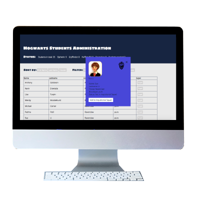

Hogwarts Student List
We had to create a Student List for the student administration of Hogwarts. The assignment had many requirements to it. The webpage had to display a list of students from a JSON file. We had to include sorting, filtering and a status of the number of students in total, in each house and expelled. Furthermore additional details of each student should be displayed in a pop up window. The user must be able to appoint a student temporarily to the Inquisitiorial Squad or expel a student. In the end we had to hack the list and change all blood types in JS . We also had to add ourselves to the list and visual effects in case the user wants to expel ourself.
Process
We started off by writing down all the features the webpage needs to have to get a better overview. After making the list I wrote pseudocode (which you can find here). The assignment was split into 4 smaller assignments. So I began coding the first version, which had the basic features. I then added more features on top and changed some of the functions with every following assignment. The pop up window for the students details aside, I applied design in the very end.
Solution
The project is coded in HTML, CSS and JavaScript. Here is a link to the Github repository. Here is a link to the final solution:
Thoughts
This assignment was a fairly big one in terms of code for me. I learned to effectively break down a big task that seems complicated to solve into smaller, more manageable pieces. I understood how helpful pseudocode is as well.